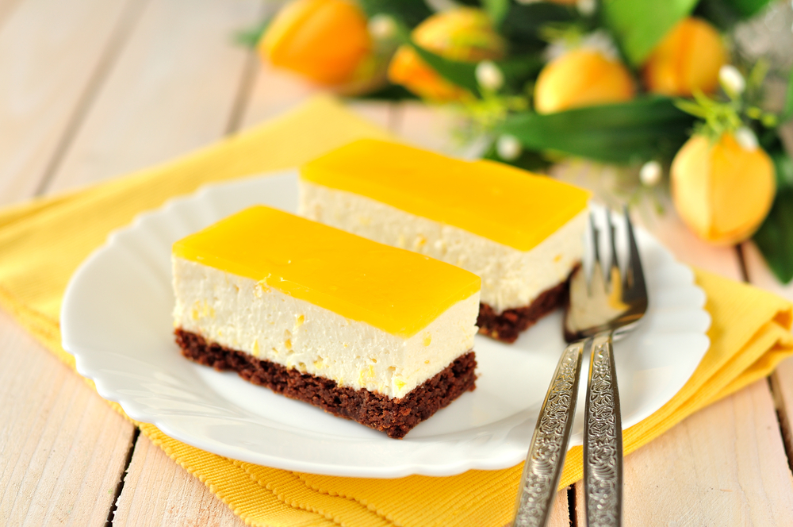

|

Poate că și tu te numeri printre cei care caută o rețetă simplă, dar delicioasă, care să fie atât pe placul membrilor familiei, cât și pe cel al prietenilor sau al invitaților care îți calcă pragul casei la ocazii speciale precum zilele de naștere, Crăciun sau Paște.
Prăjitura Fanta este una dintre acele deserturi care nu numai ca va fi apreciată de toată lumea, dar te va ajuta sa economisești și timp pentru că se prepară foarte ușor.
Rețetă
Daca te gandesti sa faci aceasta prajitura, atunci e bine sa stii ca va trebui sa iti rezervi cam o ora pentru prepararea ei, iar rezultatul va fi, cu siguranta, delicios.
Ingrediente pentru blat
- 5 ouă
- 150 grame de făină
- 200 grame de zahăr
- 40 ml de ulei
- 40 ml cacao
- Un praf de sare
- O linguriță de esență de portocale
Ingrediente pentru cremă
- O jumătate de kilogram de brânză de vaci
- 250 grame de mascarpone
- 100 grame de unt
- 150 grame de zahăr pudră
- 50 grame de zahăr vanilinat
- 50 grame de cacao
- O linguriță de esență de vanilie
Ingrediente pentru jeleu
- Un litru de suc de portocale (poti folosi Fanta, dar, in principiu, poti alege orice sortiment iti place)
- 100 grame de zahar
- 100 grame de amidon de porumb
Mod de preparare
- Incepi prin a pregati blatul. Pui cele cinci oua intr-un vas, adaugi zaharul, sarea si mixezi foarte bine totul, in general cam pana cand observi ca ouale si-au triplat volumul.
- Dupa ce compozitia si-a triplat volumul adaugi si cele 50 de grame de cacao si mixezi din nou totul, de data asta avand grija ca mixerul sa fie setat la o viteza mai mica.
- Dupa ce ai mixat totul, incorporezi restul ingredientelor manual.
- Adaugi uleiul, o lingurita de esenta de portocale, amesteci usor cu o lingura de lemn, dupa care incepi sa incorporezi si faina.
- Torni compozitia intr-o tava, nivelezi bine si dai totul la cuptorul preincalzit la 180 de grade, pentru aproximativ 20 de minute.
- Scoti blatul de la cuptor, il lasi la racit si te ocupi de pasul urmator.
- Pui sucul de portocale intr-o cratita.
- Adaugi amidonul de porumb, amesteci cu un tel, dupa care pui si zaharul.
- Pui cratita pe foc si amesteci continuu, pana cand observi ca se ingroasa compozitia.
- Iei cratita de pe foc, o acoperi cu o folie de plastic si lasi la temperatura camerei.
- Pasul urmator e sa te ocupi de crema. Pui untul intr-un bol mai mare.
- Adaugi zaharul pudra si zaharul vanilinat.
- Mixezi foarte bine totul pana cand untul arata ca o crema si adaugi branza de vaci, esenta de vanilie si mixezi din nou totul.
- Adaugi si branza mascarpone (pe care ai tinut-o, in prealabil, la frigider) si mixezi din nou, dar nu prea mult pentru ca risti sa se taie compozitia.
|